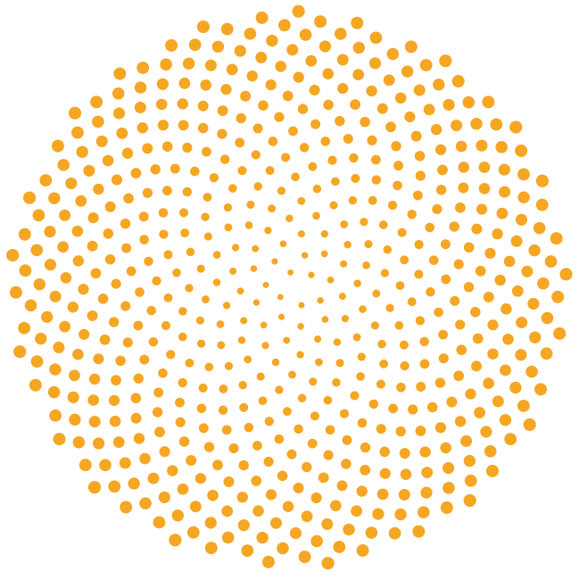

Siembra 26/27 · Girasol
Fecha óptima · Oeste de Buenos Aires
15/10 al15/11
NS 1113 CL
NS 1115 CL
NS 1117 CL
Fuente: marbetes oficiales Nidera 26/27 · región Oeste de Buenos Aires.

Fuente: marbetes oficiales Nidera 26/27 · región Oeste de Buenos Aires.